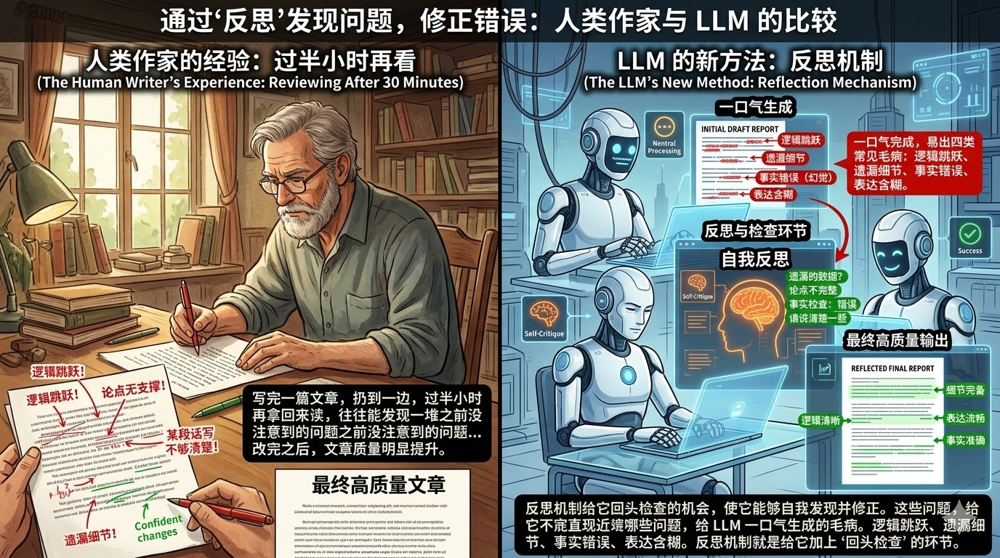
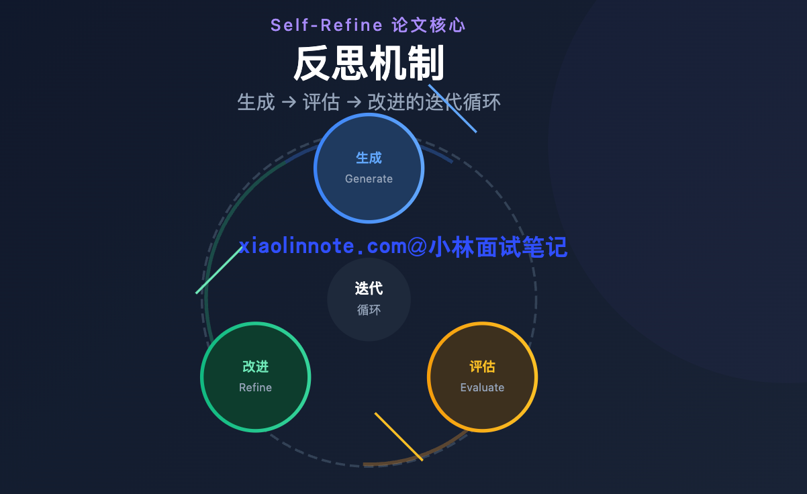
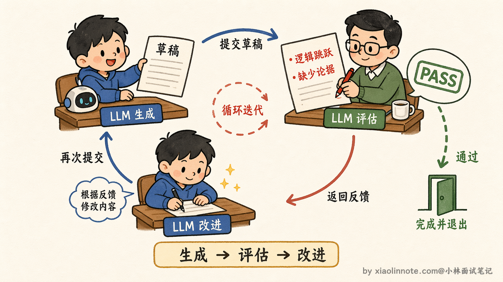
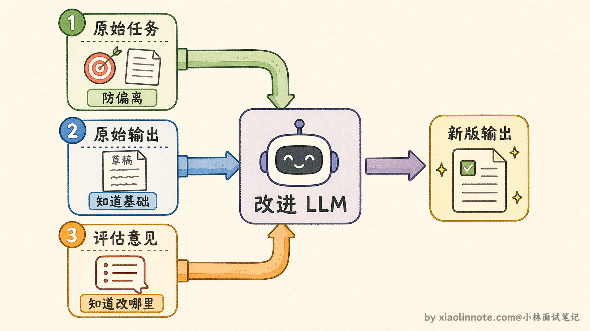
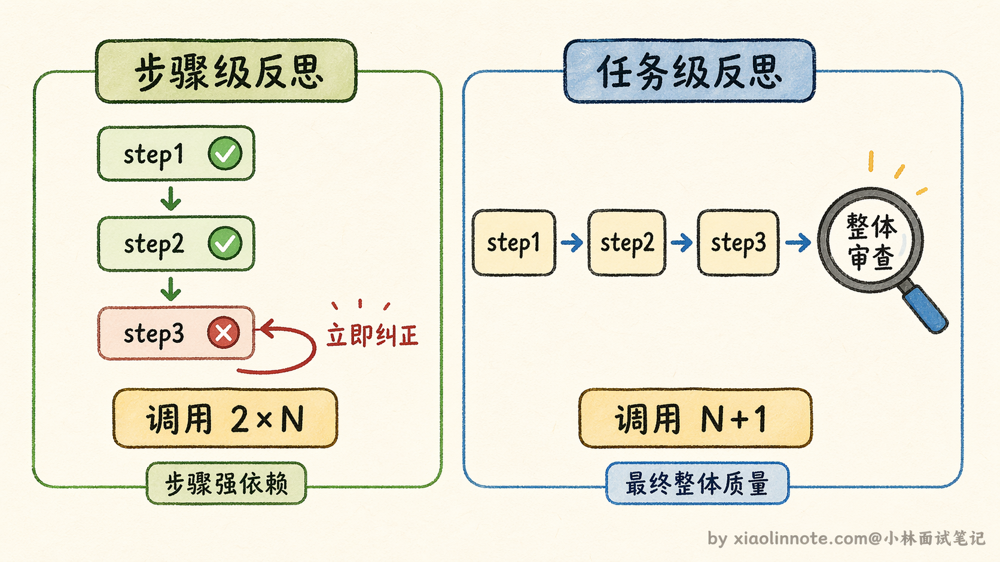
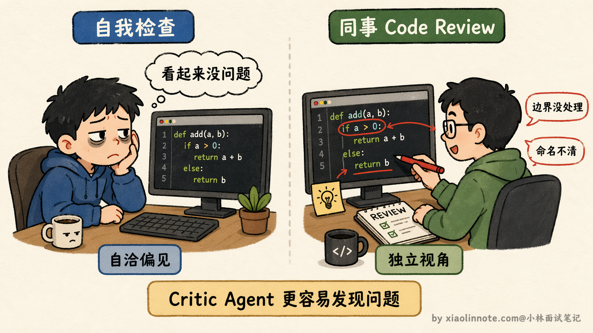
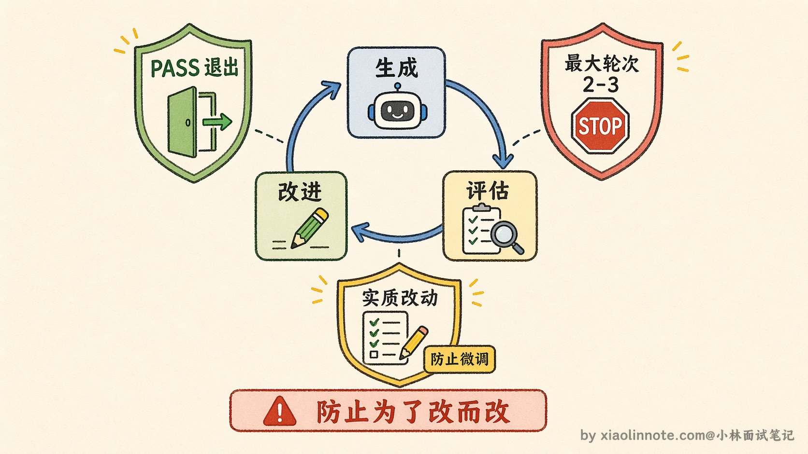

讲讲 Agent 的反思机制？为什么要用反思？具体怎么实现？
👔面试官：Agent 的反思机制你了解吗？怎么实现的？
🙋♂️我：了解，就是让 LLM 对输出不满意的时候再重新生成一次，多试几次输出质量就会提升。
👔面试官：「再生成一次」和「反思后改进」是两回事。反思不是随机重试，你知道两者的本质区别在哪吗？
🙋♂️我：反思……就是让 LLM 看看自己输出有没有问题，然后再改一下？
👔面试官：说对了一半。关键是「评估」这一步要怎么设计。你直接让 LLM「看看有没有问题」，它往往会说「输出看起来不错」，什么都发现不了。评估 prompt 里有一个最重要的设计，你知道是什么吗？
🙋♂️我：给出明确的检查维度，比如逻辑、完整性、事实准确性，这样它才有针对性地检查？
👔面试官：对，还有一个同样重要：必须有「PASS」机制，给 LLM 一个「够好了就停」的出口。没有这个，它会无限挑毛病，反而把原本对的东西改错。那你说说，反思的轮次该怎么控制？
被问到这里才意识到，反思机制是一个有完整设计的闭环，每个细节都有原因。来系统梳理一遍。
💡 简要回答
反思机制我的理解是：让 Agent 在完成一个步骤或整个任务后，自我评估输出质量，判断有没有问题，不达标就重试或调整策略。
用反思的原因是 LLM 第一次输出不一定是最优的，加一轮自我检查能显著提升质量，相当于人写完东西自己再看一遍。
代价是多至少一次 LLM 调用，token 消耗和延迟都会增加，所以我在工程里通常只在质量要求高的关键节点启用反思，不是每步都做。
📝 详细解析
先从一个日常经验说起：你写完一篇文章，扔到一边，过半小时再拿回来读，往往能发现一堆之前没注意到的问题，某个句子逻辑跳跃了、某个论点没有支撑、某段话写得不够清楚。改完之后，文章质量明显提升。

LLM 也面临同样的问题。它每次生成输出，本质上是在「一口气」完成的，没有机会停下来检查。
第一次输出常见的毛病有这几类：逻辑跳跃（推理步骤不完整，中间少了关键推断）、遗漏细节（任务里要求了某些点，但没有全部覆盖到）、事实错误（模型幻觉导致的错误信息）、表达含糊（意思到了但说得不清晰）。
这些问题，如果给 LLM 一个「回头检查」的机会，它自己是有能力发现并修正的。反思机制就是给它加上这个环节。
核心循环：生成 -> 评估 -> 改进
反思机制的核心思路来自 Self-Refine 论文（Madaan 等人 2023 年提出），整个流程就是「生成 -> 评估 -> 改进」的循环。

你可以用「草稿 -> 批阅 -> 修改」来类比：学生交出草稿（生成），老师批阅指出问题（评估），学生拿着批注修改（改进），改完的稿子再经过老师审阅，直到通过为止。

这个循环靠两个 prompt 来驱动。第一个负责评估，让 LLM 扮演「检查者」的角色，专门去找问题：
任务：{task}
当前输出：
{current_output}
请评估以上输出：
1. 有没有事实错误或逻辑问题？
2. 有没有遗漏重要内容？
3. 表达是否清晰准确？
如果输出已经足够好，回复「PASS」；
否则指出具体问题并给出改进建议。
这个评估 prompt 的设计有几个值得注意的地方。
首先，它给出了明确的检查维度（事实、逻辑、完整性、表达），而不是让 LLM 自由发挥。这很重要，没有方向的评估往往流于表面，LLM 可能只是说「输出看起来不错」，没有真正找到问题。给出具体维度，它才会有针对性地逐项审查。
其次，「PASS」机制是必须有的，这是给 LLM 一个「足够好就停」的出口。如果没有这个机制，LLM 为了反思而反思，可能对一个已经很好的输出挑不必要的小毛病，反而把原本对的东西改错。
如果评估结果不是 PASS，就把评估意见喂进第二个改进 prompt：
原始任务：{task}
当前输出：{current_output}
评估意见：{reflection}
请根据评估意见改进输出：
改进 prompt 有一个关键点：它同时传入了原始任务、原始输出、评估意见这三样东西，缺任何一个都会让改进变得盲目。只有任务没有原始输出，LLM 不知道在什么基础上改；只有原始输出没有评估意见，LLM 不知道改哪里；只有评估意见没有任务，LLM 可能改着改着偏离了原始目标。三者都在，它才能有针对性地修改，而不是把内容全部重写一遍。

两个 prompt 循环调用，直到 LLM 自己回复 PASS，或者超过最大轮次强制退出，整个外层逻辑不过是一个普通的 for 循环。
两个粒度：步骤级 vs 任务级
反思可以在两个粒度上触发，它们有不同的适用场景，代价也不一样，选哪种需要根据任务特点来判断。
步骤级反思是在每个工具调用或推理步骤完成后立即检查。它的好处是错误早发现早纠正，不会让一个小错误在后续步骤里层层放大。
想象一下 Agent 在做多步信息检索：第一步选了一个不精准的搜索关键词，后续所有步骤都在错误的信息上继续，到最后才发现，前面的工作全废了。

步骤级反思能在第一步就发现关键词的问题，马上纠正，后续步骤都建立在正确基础上。适合这种粒度的场景是步骤之间强依赖、前一步错了后面会全错的任务。代价是每一步都多一次 LLM 调用，整体延迟和 token 消耗会大幅增加，一个 10 步的任务可能实际要调用 20 次 LLM。
任务级反思是整个任务执行完之后做一次整体评估。好处是开销更小，整个任务只多一次 LLM 调用；而且从整体视角审视，能发现步骤级看不到的问题，各个步骤单独看都是对的，但整体结论前后矛盾，或者各部分之间衔接不自然，这种问题只有从整体视角才能看出来。
代价是如果任务中途某步出了大问题，到最后才发现，前面的执行都已经浪费了。适合步骤之间相对独立、最终输出的整体质量更重要的场景，比如生成一份报告。
多 Agent 互评：为什么「他人审视」比「自我检查」更好
除了单 Agent 的自我反思，还有一种效果通常更好的方式，多 Agent 互评：专门设置一个独立的 Critic Agent，让它来审查执行 Agent 的输出。
为什么独立的审查比自我反思效果更好？你可以类比代码 review 的场景：一个人写完代码自己检查，和让同事来 review，发现的问题质量往往不一样。自己写的东西自己看，容易「视觉疲劳」，会不自觉地补脑跳过问题，潜意识里倾向于认为自己的逻辑是正确的。
在 LLM 里同样如此：单 Agent 自我反思时，评估者和生成者是同一个模型，它在生成输出时形成的一套「内部逻辑」，做评估时也会沿用这套逻辑，对自己输出的错误不够敏感，容易陷入「自洽」。而独立的 Critic Agent 没有这种包袱，它的唯一职责就是「找问题」，视角更客观，更容易发现执行 Agent 自己看不出来的漏洞。
互评的具体流程是：执行 Agent 生成输出，Critic Agent 审查并给出具体批注，执行 Agent 根据批注修改，Critic Agent 再次确认。

什么时候值得用这种方式？质量要求非常高的场景，比如生成代码后让独立的测试 Agent 来验证、生成分析报告后让事实核查 Agent 交叉验证。代价是又多一个 Agent 的调用成本，系统复杂度也更高，所以并不是所有场景都需要互评，普通场景用自我反思就够了。
进阶：Reflexion 和 LATS，把反思做得更深
前面讲的 Self-Refine 是最基础的反思模式，学术界在此基础上还有更进一步的探索，了解这些能帮你在面试里展现更深的理解。
第一个是 Reflexion（Shinn 等人 2023 年提出，和 Self-Refine 是同年的工作），这篇论文的核心思路是：不仅让 Agent 反思当前输出的质量，还要让它把「失败经验」存下来，下次遇到类似任务时直接参考，避免重蹈覆辙。这里的"类似"通常通过把经验记忆塞到当前任务的上下文里，让 LLM 自己在生成时参考（而不是靠严格的相似度匹配去检索）。
你可以理解成 Self-Refine 是「写完作文当场改」，Reflexion 是「把这次犯的错记在笔记本上，下次写作文之前先翻一遍笔记」。
Reflexion 引入了一个「经验记忆」的概念，每次反思产生的教训会被存储起来，作为后续任务的参考上下文。这个思路在需要重复执行类似任务的场景里特别有价值，比如一个代码生成 Agent，第一次写出了有 bug 的代码，反思后不仅修好了这次的 bug，还把「这类 bug 的成因和避免方法」记下来，下次生成类似代码时就不太容易犯同样的错。
第二个是 LATS（Language Agent Tree Search，Zhou 等人 2024 年提出），它把反思和树搜索结合了起来。前面讲规划能力时提到过 ToT（思维树），LATS 的思路是把蒙特卡洛树搜索（MCTS）和反思结合起来：通过 MCTS 同时探索多条路径，每条路径执行之后都会做评估和反思，反思结果作为经验反馈给后续的路径探索。这样一来，Agent 不仅能同时探索多条路径，还能从已经走过的路径里学到教训，让后续的探索更有针对性。代价当然也更大，既有多路径的成本又有反思的成本，目前主要还是学术研究场景，还没看到成熟的生产级实现。
还有一种思路叫辩论式反思，不是让一个 Agent 自己审查自己，而是让多个 Agent 互相辩论。比如设置一个「正方 Agent」和一个「反方 Agent」，正方提出一个方案，反方专门挑毛病、提反对意见，正方再针对反对意见优化方案。这种对抗式的反思比单方面审查更能暴露深层问题，因为反方的「职责」就是找漏洞，它会比一个只是「检查一下有没有问题」的 Critic Agent 更积极地挖掘问题。工程上偶尔会在高质量要求的场景里用到这个模式，比如重要的商业决策分析、法律文本审查等。
工程权衡：怎么用才合理？
理解了反思机制的原理和进阶方案之后，还需要知道工程上怎么合理地用它，不然反而会让系统变慢、变贵、甚至陷入死循环。
什么场景值得开反思？输出质量要求高、错误代价大的关键节点，比如最终报告生成、重要决策的推理过程，以及任务比较复杂、LLM 容易遗漏细节的场景，这些是反思最能发挥价值的地方。
什么场景不值得开？简单直接的任务，比如格式转换、简单问答，加反思纯粹是浪费。实时性要求高的场景也一样，一次反思至少多一次完整的 LLM 调用，延迟可能从 1 秒涨到 3 秒，有些应用场景根本接受不了。
最重要的是防死循环，必须设最大轮次，通常设 2-3 轮，绝对不能依赖 LLM 自己判断停止。原因是 LLM 有时会陷入「为了改而改」的循环，每次评估都觉得还有地方能优化，改完又有新的「问题」，每轮改动都很小但实质没有进步，系统就一直在转圈。硬性的轮次上限是唯一可靠的退出机制。

最后要对整体代价有清醒认知：每轮反思包含一次评估和一次改进，3 轮反思意味着在原始生成之外额外增加 6 次 LLM 调用，延迟和成本都会大幅增加，这是工程上做取舍的核心数字。反思是提升质量的有效手段，但不是免费的，用在刀刃上才有价值，不是每步都做。
🎯 面试总结
回顾开头踩的雷，把反思说成「不满意就重新生成」是最常见的误区，这说明没有理解反思机制的核心：它是「生成 -> 评估 -> 改进」的有结构的闭环，不是随机重试。
答好这道题有几个要点。
首先要说清楚反思的闭环结构：两个 prompt 各司其职，评估 prompt 专门找问题，改进 prompt 结合原始任务和批注做定向修改，缺任何一个环节都会失效。
其次，评估 prompt 的两个关键设计要能说出来：给出具体检查维度，以及设置「PASS」出口，否则 LLM 要么流于表面、要么无限挑毛病。
第三，步骤级和任务级反思的区别很容易被忽略：前者错误发现得早但开销大，后者能看到整体问题但前期做的无效工作难以挽回，要根据任务特点选择。
第四，最容易被遗漏的工程要点是防死循环：必须硬性设置最大轮次（2-3轮），不能依赖 LLM 自己停止。
最后，如果能提到多 Agent 互评比自我反思效果更好，并说出原因（同一模型对自己的输出有「自洽」偏见），会是一个加分点。